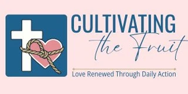
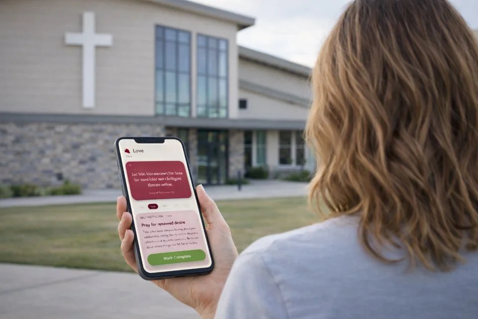
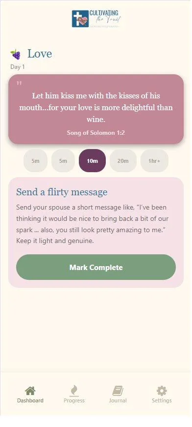
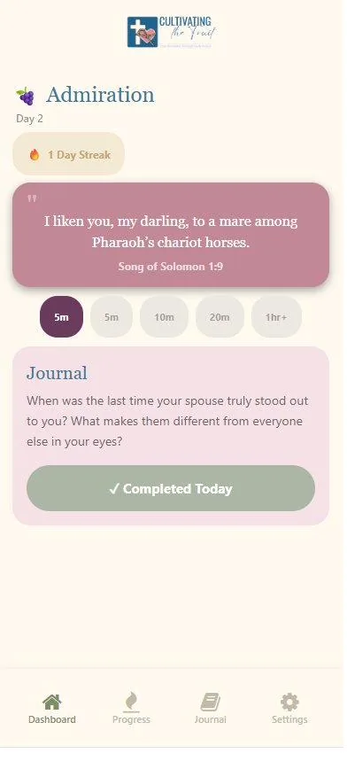

He says he loves you. And you know he does.
He works hard. He provides. He's faithful. He's a good man who believes he's doing his part.
But somewhere between the children, the bills, the tired evenings and the phones in bed, the two of you became very good at running a life together, and less practised at actually turning toward each other.
Maybe there's very little affection, very little real conversation, very little pursuit.
Or maybe he still reaches for you physically, but something in you holds back. It can feel like he wants closeness from your body without having created closeness with your heart.
You know he loves you. You just don't always feel loved.
Cultivating the Fruit is a simple Bible-based marriage app for the Christian wife who wants to begin tending her marriage again with one small Scripture-led step each day.
You can't control how he responds. But you can begin with the part of the marriage you can influence: your prayers, your words, your choices, your heart, and the way you see him.
Instant access. iPhone and Android. 30-day guarantee.
The part that can be hard to explain
He may think the marriage is perfectly fine. From his side, the big pieces are still in place.
But love that is assumed can start to feel very different from love that is expressed.
When most of your conversations are about the children, the bills, the schedule, or what still needs doing, the husband-and-wife part of the marriage starts to feel thin.
For many wives, physical closeness doesn't begin in the bedroom. It begins in the way he looks at you at breakfast, the message he sends mid-afternoon, the moment he puts the phone down and actually listens. When those moments are missing, physical intimacy can start to feel like one more thing being asked of you, rather than the natural overflow of closeness you already feel.
And at night, when he's scrolling beside you or asleep on the couch again, something in you sinks. You miss being asked. You miss the look across the room that used to say, "I see you."
He's a good man. Other women have it worse. We're both tired. This is normal.
So another week passes. The distance becomes part of the furniture.
The risk isn't a dramatic ending. It's the slow acceptance of a marriage that still functions while the warmth between you becomes something you remember instead of something you practise.
Of marriages that end are initiated by the wife
Women who eventually leave had been thinking about it for over a year beforehand
You're nowhere near that. And that's exactly why now is a good time to begin, while there's still goodwill, history and love to work with.
A fair question
Why should you be the one to notice the distance? To read the books, search for answers, try to soften your tone?
You already do so much. And if he still reaches for you physically, the frustration can feel even sharper. He wants that from you, but where was he when you needed to feel seen, heard or chosen during the day?
That doesn't make you selfish. It makes you human.
This app wasn't created to tell wives to try harder while husbands stay passive.
It was created to give you one small step from the part of the marriage you can influence: your heart, your words, your prayers, and the way you choose to see him.
But what you bring into the marriage every day does shape it. Let's be honest — is it possible you've gotten into a bit of a rut too? That the way you've been showing up has changed along with his?
You can't make him listen, lead, or meet you halfway. But you can decide what you're putting into the marriage from your side. And you don't have to wait for him to be ready to begin.
Note: This app is for marriages where the goal is greater warmth and connection. If abuse, betrayal, addiction or coercion is present, please seek support from a trusted pastor, counsellor or qualified professional.
Made for real life
This isn't about becoming the perfect wife. It's about choosing one faithful action today, from the part of the marriage you can influence.

What it actually looks like
Every day is built around one Scripture anchor and one Fruit of the Spirit theme. Most Christian marriage resources are helpful once both people are ready — but this was built for the ordinary Tuesday night when you want to do something without starting another emotional conversation. And unlike most approaches, it's also grounded in what world-leading relationship researchers tell us actually shifts a marriage over time.
You open the app, read the verse, and choose one action.
"Therefore, as God's chosen people, holy and dearly loved, clothe yourselves with compassion, kindness, humility, gentleness and patience."
A prayer, reflection or journal prompt for your own heart first.
"Ask God to soften the places in you that feel tired or guarded, and help your marriage become a place of warmth again."
A warm, specific word — a message, an appreciation, an honest question.
"Send him: 'I was thinking today about how much you do for our family. I see it, and I'm grateful.'"
A small act of love chosen on purpose, not performed from habit.
"Take one small task off his plate today without pointing it out or needing him to notice."
A guided question designed for a tired evening — real enough to matter, simple enough to actually start.
"Ask him: 'What's felt hard for you lately that I might not have noticed?'"
A simple way to be husband and wife again, not just two people managing a life.
"Sit together for 20 minutes with phones away and ask each other what you miss about your early years together."


Actual app screens. One verse. Five options. You choose one.
The point is consistency, not perfection.
Start for Just 63c a DayAU$19 for 30 days · Instant access · 30-day guaranteeChoose your access
1 Month
Not sure yet? Try it for a month with no obligation. If it's your thing, you can come back for longer.
Just 63c a day. Approx. US$12.
Won't automatically renew.
Start with 1 Month6 Months
It took years for your marriage to become stale. It'll take more than a month to shift. Six months gives small daily choices time to become a different pattern.
Approx. US$31.
Won't automatically renew.
Choose 6 Months12 Months
A year of this has the chance to create a whole different marriage. Not just a shift in tone — a different way of being husband and wife.
About 22c a day. Approx. US$50.
Won't automatically renew. All updates included. Parent-child stream free when it launches.
Choose 12 MonthsAfter purchase you receive instant access and simple installation instructions. No course to catch up on. No big talk required. Open the app, read the verse, choose one action.
Secure checkout. Instant access. 30-day money-back guarantee.
The honest question
This app can't promise he'll respond the way you hope. Marriage involves two people, and he's responsible for his own choices and his part in the relationship.
But this isn't only about changing him. It's about something that matters regardless of how he responds.
That kind of shift in you often becomes something he can feel, even before he can name it. And hopefully, before long, he starts meeting you halfway.
If he does want to join you, your subscription includes a partner invite link so he can use the app alongside you.
You don't have to wait for him to begin.
What the research shows
One person's behaviour change influences their partner's. When one spouse improves their emotional tone and actions, the other tends to follow over time.
Homish and Leonard, NIH (2008)
A wife's supportive behaviour predicts lower marital stress twelve months later. Wives' supportive behaviour showed a measurable reduction in their partner's marital stress a year on.
Fincham and Beach, PMC (2010)
Husbands who accept influence from their wives have happier, more stable marriages. One of the most consistent predictors of long-term marital satisfaction in relationship research.
The Gottman Institute
Wives who regulate their own emotional responses show increased marital satisfaction over time. From a 13-year longitudinal study.
Bloch, Haase and Levenson, PMC (2014)
None of this means one spouse can control a marriage, or that effort from one person guarantees a particular outcome. What the research shows is that you're not powerless. Your choices have real, measurable effects on the relationship you share.
A note from the founder
I built Cultivating the Fruit because I know how easily a marriage can keep functioning while warmth fades. Many women need something smaller and more immediate — something for an ordinary evening when they're tired, frustrated, or sick of being the one who feels the distance.
My sister, a church chaplain, helped shape the Scripture themes and activity foundations. She spent hours going through every daily theme and activity, and her church congregation were among the first to test the app in the real world.
The daily prompts are also built around world-leading relationship research on connection, emotional tone, fondness, admiration and small repeated behaviours over time.
This app can't promise a particular outcome. But it can help you begin with clarity, faith and one small step.
If it's not practical, useful and worth the small investment, email us and we'll refund in full. No forms. No pressure. No hassle.
Start for Just 63c a DayQuestions
My husband won't do this with me.
That's okay. One motivated spouse can start, use it well, and see real benefit without the other person knowing. If he wants to join later, your subscription includes a partner invite link.
Is this just another thing for me to do while he does nothing?
No. It gives you one small Scripture-led step from the part of the marriage you can influence: your heart, your words, your prayers, your choices. He's still responsible for his part. You're choosing not to let drift or resentment decide all of yours.
Can this make him change?
No app can make another person change. But research shows that one person changing the energy and tone they bring into a marriage can shift the pattern over time. Your choices aren't wasted, even when you begin alone.
We're doing okay. Do we actually need this?
This is for marriages that are good but need tending. The slow drift often happens when nothing looks wrong enough to act on. You don't have to wait for a crisis.
What if physical intimacy is still there but I feel emotionally disconnected?
That's exactly the kind of marriage this app was created for. The daily actions help build warmth, attention and connection so the emotional side starts showing up alongside the physical.
Is this in the App Store or Google Play?
The app is distributed directly. After purchase you receive simple installation instructions. It works on iPhone and Android.
Is this for serious problems like abuse or betrayal?
No. This app is for marriages where the goal is greater warmth and connection. If abuse, betrayal, addiction or coercion is present, please seek support from a trusted pastor, counsellor or qualified professional.
You can't control him. You can't force closeness back into the room.
But you can take one small step. And that's how tending begins.
Start for Just 63c a DayAU$19 for 30 days · Instant access · 30-day guarantee